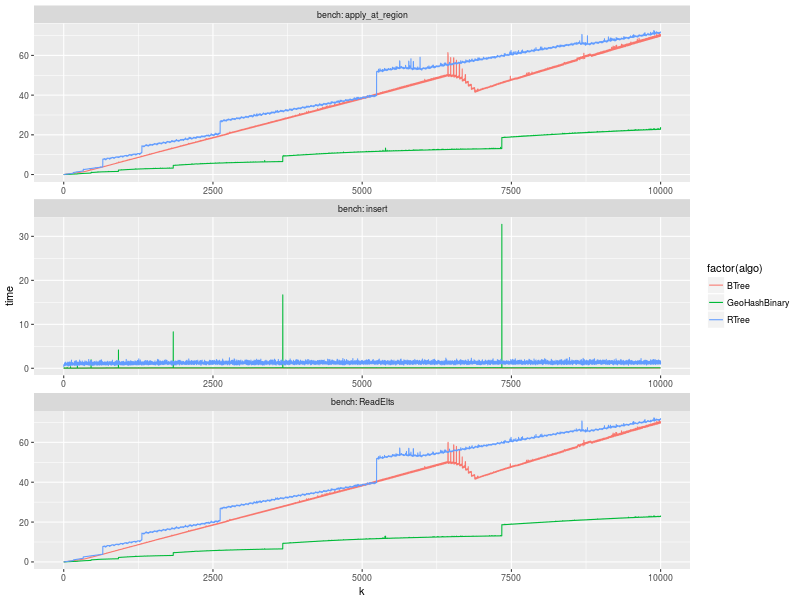
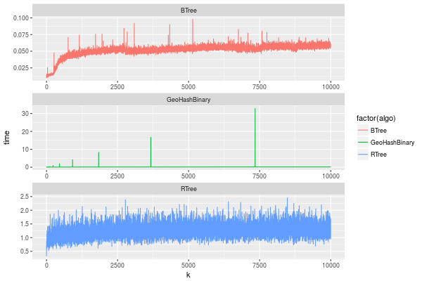
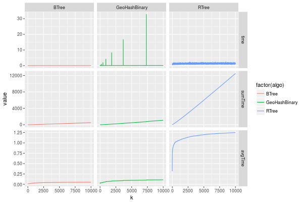
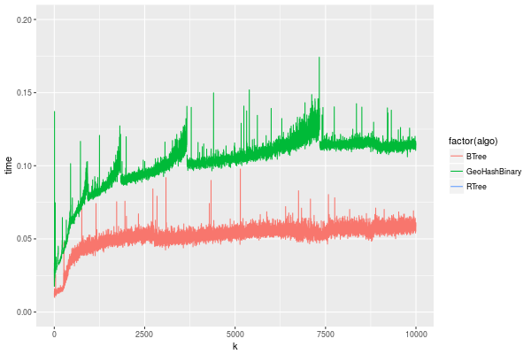

Results
Table of Contents
Load the CSV into R
library(plyr)
df = read.csv(f,header=FALSE,strip.white=TRUE,sep=";")
df[7] <- NULL
df[5] <- NULL
names(df) = c("algo","bench","k","time","count")
head(df)
algo bench k time count
1 GeoHashBinary insert 0 0.029754 NA
2 GeoHashBinary ReadElts 0 0.001554 NA
3 GeoHashBinary ReadElts 0 0.001440 NA
4 GeoHashBinary ReadElts 0 0.001389 NA
5 GeoHashBinary apply_at_region 0 0.001389 100
6 GeoHashBinary insert 1 0.022867 NA
Summary of the data frame
summary(df[df$algo=="GeoHashBinary",]) summary(df[df$algo=="BTree",]) summary(df[df$algo=="RTree",])
algo bench k
BTree : 0 apply_at_region:10000 Min. : 0
GeoHashBinary:50000 insert :10000 1st Qu.:2500
RTree : 0 ReadElts :30000 Median :5000
Mean :5000
3rd Qu.:7499
Max. :9999
time count
Min. : 0.00139 Min. : 100
1st Qu.: 1.34083 1st Qu.: 250075
Median : 9.44647 Median : 500050
Mean : 9.02828 Mean : 500050
3rd Qu.:12.87295 3rd Qu.: 750025
Max. :32.73830 Max. :1000000
NA's :40000
algo bench k
BTree :50000 apply_at_region:10000 Min. : 0
GeoHashBinary: 0 insert :10000 1st Qu.:2500
RTree : 0 ReadElts :30000 Median :5000
Mean :5000
3rd Qu.:7499
Max. :9999
time count
Min. : 0.00422 Min. : 100
1st Qu.: 3.59117 1st Qu.: 250075
Median :28.44325 Median : 500050
Mean :28.26849 Mean : 500050
3rd Qu.:47.47653 3rd Qu.: 750025
Max. :71.60770 Max. :1000000
NA's :40000
algo bench k
BTree : 0 apply_at_region:10000 Min. : 0
GeoHashBinary: 0 insert :10000 1st Qu.:2500
RTree :50000 ReadElts :30000 Median :5000
Mean :5000
3rd Qu.:7499
Max. :9999
time count
Min. : 0.00464 Min. : 100
1st Qu.: 3.73900 1st Qu.: 250075
Median :32.37425 Median : 500050
Mean :32.92621 Mean : 500050
3rd Qu.:57.50140 3rd Qu.: 750025
Max. :72.46010 Max. :1000000
NA's :40000
1 Overview of results plot
Plot an overview of every benchmark , doing average of times.
summary_avg = ddply(df ,c("algo","k","bench"),summarise,"time"=mean(time))
library(ggplot2) ggplot(summary_avg, aes(x=k,y=time, color=factor(algo))) + geom_line() + facet_wrap(~bench, scales="free",labeller=label_both, ncol=1)

2 Insertion performance
insTime = subset(summary_avg, bench=="insert")
2.1 Overall plot
ggplot(insTime, aes(x=k,y=time, color=factor(algo))) + geom_line() + facet_wrap(~algo, scales="free", ncol=1)

Total insertion time:
ddply(insTime,c("algo"),summarize, Average=mean(time), Total=sum(time))
algo Average Total
1 BTree 0.05150084 515.0084
2 GeoHashBinary 0.10885076 1088.5076
3 RTree 1.24829441 12482.9441
2.2 Amortized time
We compute tree time:
- individual insertion time for each batch
- accumulated time at batch #k
- ammortized time : average of the past times at batch #k
avgTime = cbind(insTime,
sumTime=c(lapply(split(insTime, insTime$algo), function(x) cumsum(x$time)), recursive=T),
avgTime=c(lapply(split(insTime, insTime$algo), function(x) cumsum(x$time)/(x$k+1)), recursive=T)
)
2.2.1 Melting the data (time / avgTime)
We need to melt the time columns to be able to plot as a grid
library(reshape2)
melted_times = melt(avgTime, id.vars = c("algo","k"),measure.vars = c("time","sumTime","avgTime"))
2.2.2 Comparison Time X avgTime plot
ggplot(melted_times, aes(x=k,y=value,color=factor(algo))) + geom_line() + facet_grid(variable~algo,scales="free", labeller=labeller(variable=label_value)) #facet_wrap(variable~algo,scales="free", labeller=labeller(variable=label_value))

2.3 Zoom View
ggplot(insTime, aes(x=k,y=time, color=factor(algo))) + geom_line() + ylim(0,0.2)
